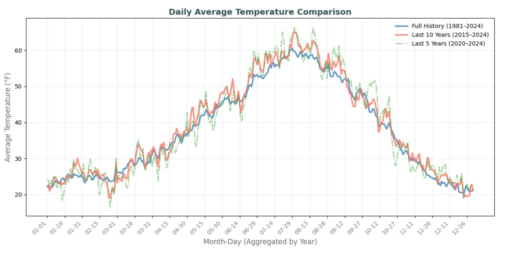
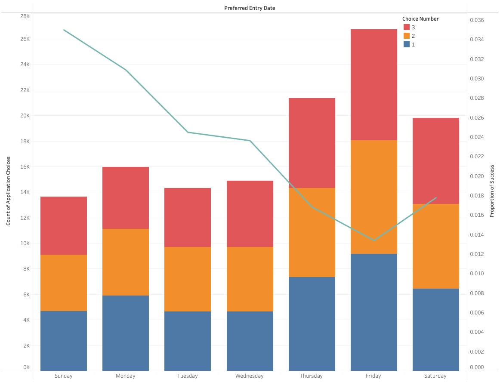
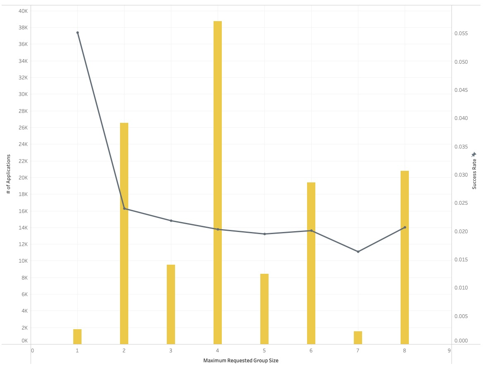
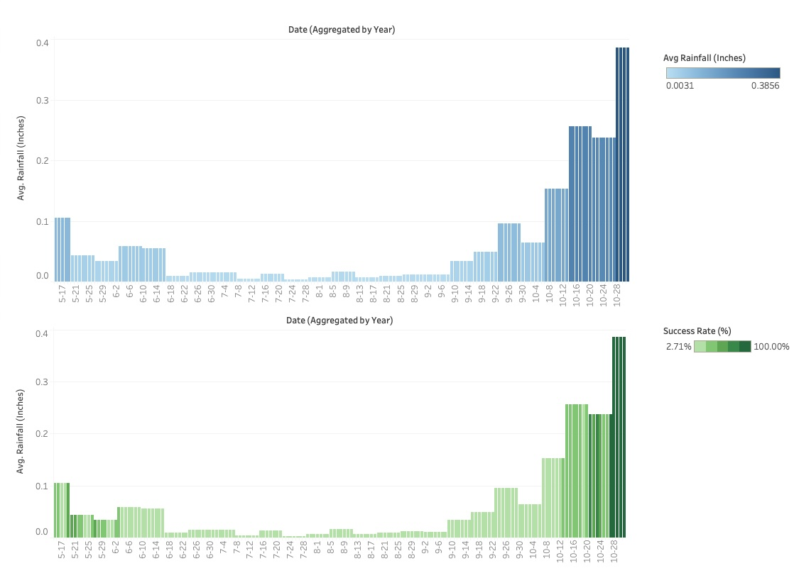
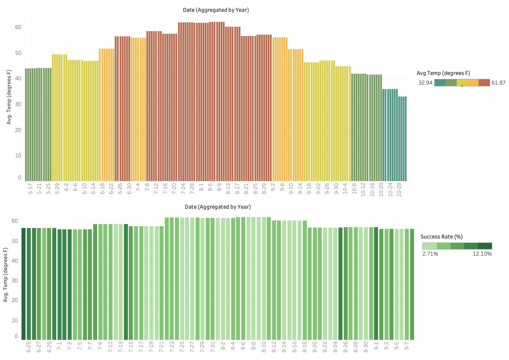
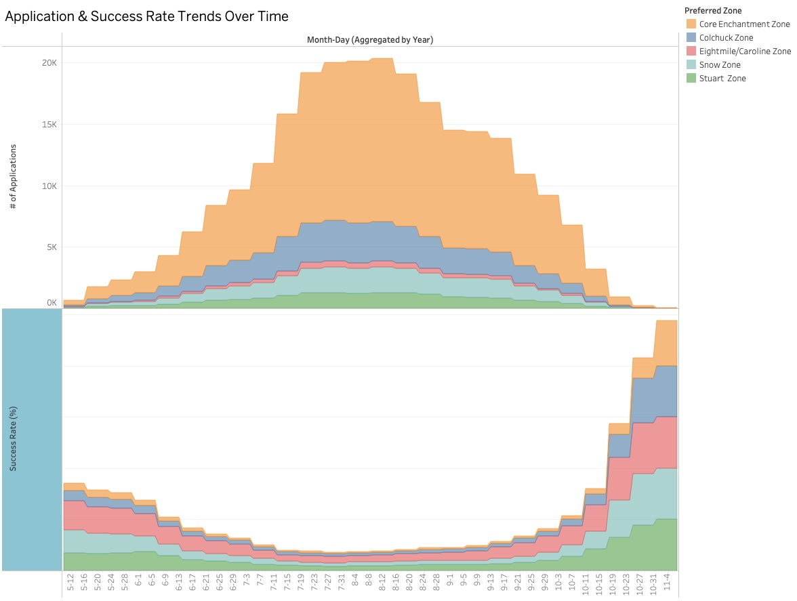
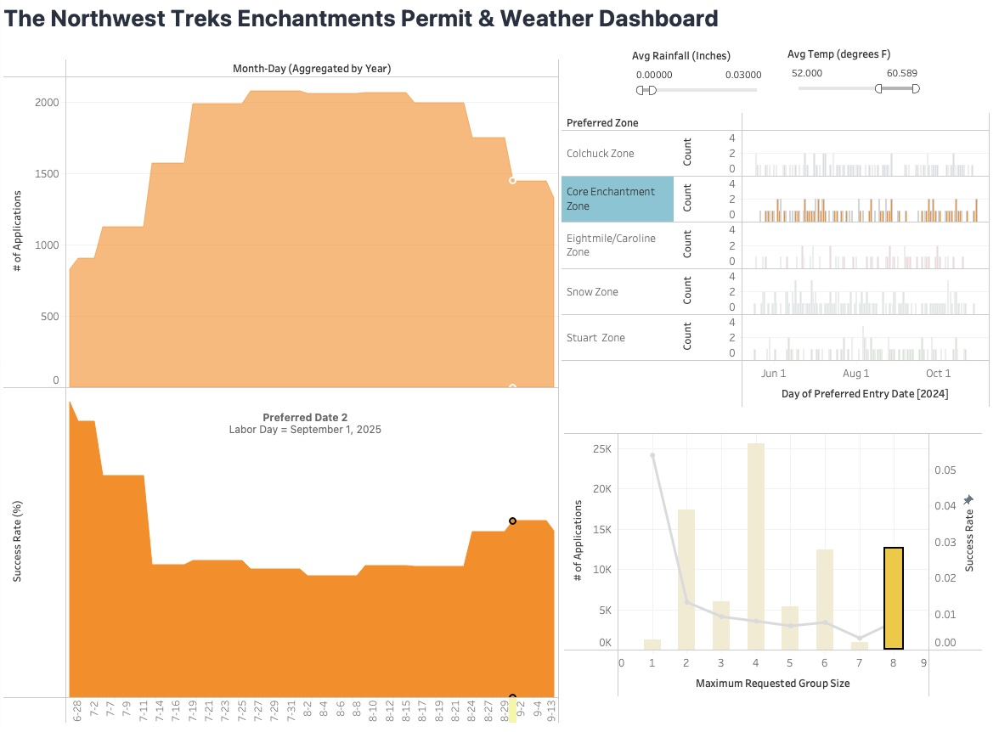
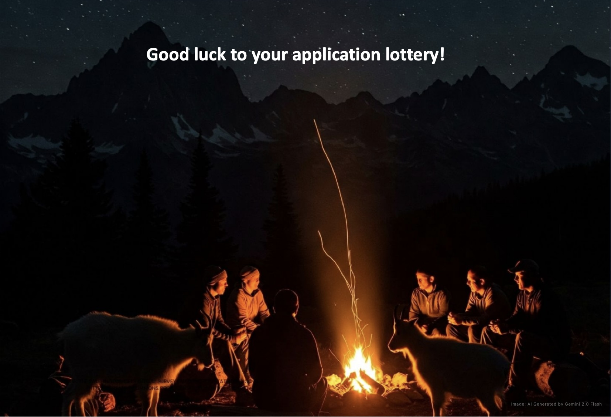

Cracking the Enchantment Lottery —
What 6% Acceptance Rates Don’t Tell You
Tableau | Python | Business Intelligence | Data Visualization

Only 6–7% of applicants win a permit to hike the Enchantments. But behind that number lies a strategy — if you know how to read the data.
If you’ve ever tried to get a permit for the Enchantments, you know how it feels: you submit your application, cross your fingers, and hope you’re one of the lucky few. It's a lottery, and the odds are brutal—around 6 to 7%. But I started wondering: what if there’s more to it than luck?
So I pulled the data. All of it. And built a Tableau dashboard to see what’s really going on.
First decision: how much history actually matters?
The dataset went all the way back to 1981. At first, I thought—great, the more data the better. But when I visualized it, it was obvious: too much noise. The older weather patterns didn’t reflect how things are trending now. Then I tried just the last 5 years—but it was chaotic. Way too much climate volatility. Big swings in temperature and rainfall made the trend hard to trust.
I landed on a 10-year window. It reflects the recent warming trend (which matters), but also smooths out the weirdness of the past few years. Clean enough to spot real patterns. Recent enough to be relevant.

Baseline odds: not great
Once I cleaned the data, the first thing I looked at was the overall success rate. In 2024, only 6–7% of applicants got a permit. That’s low. But I started to notice a few things that quietly nudged the odds.
People who applied on Mondays, Tuesdays, or Wednesdays did better. Bigger group sizes—6 or 8—also had a similar or slight edge. And applying right after holiday weekends (like Sundays and Mondays after July 4 or Labor Day) helped too. These weren’t huge jumps in success rate, but in a lottery this competitive, small advantages count.


Everyone wants perfect weather—but it can backfire
Most people try to pick days with warm temps and no rain. Makes sense. But those are also the most popular days, which means more competition. When I looked at success rates for days with ideal weather—say, above 52°F and less than 0.03 inches of rain—they were actually lower than you'd expect.
The trick is finding the right kind of good weather: warm enough to be comfortable, but not the exact same dates everyone else is targeting. Sometimes slightly cooler or less predictable days had higher win rates.


The Core Zone is tough—but not random
If you're going for the Core Zone, you’re up against the most competition. No surprise there. But the data showed it’s not just a crapshoot. Applications for the Core that were submitted midweek, especially toward the end of June or around holiday weekends, did better.
It's still hard to win, but there are patterns. And if you know them, you’re not going in blind.

I built a tool so people can run their own strategy
This wasn’t just a data dive for fun. I wanted to make something useful. So I built a dashboard where you can pick your preferences—zone, date, weather conditions, group size—and it shows your historical odds. Not just general advice. Actual past results based on your exact filters.
For example, if you want Core Zone, with decent weather, here are your best bets in 2025:
• Sunday, July 6 (after July 4 weekend)
• Monday, September 1 (Labor Day)
• Wednesday, June 25

Final thought: it’s not just luck
People treat the Enchantments lottery like buying a scratch-off ticket. But it’s not that random. There are clear patterns in the noise—if you know where to look. This project was about surfacing those patterns and making them usable. The result? A tool that gives you a better shot.
And when only 6% of people get in, a better shot is a big deal.
